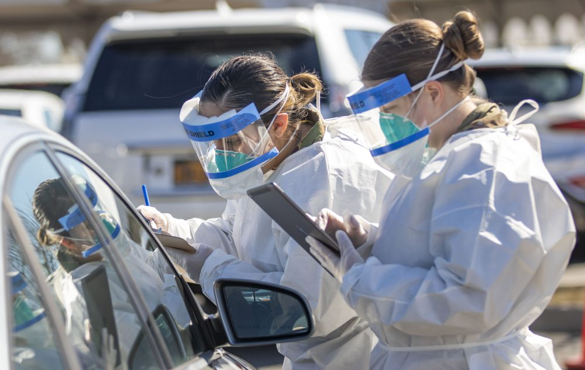
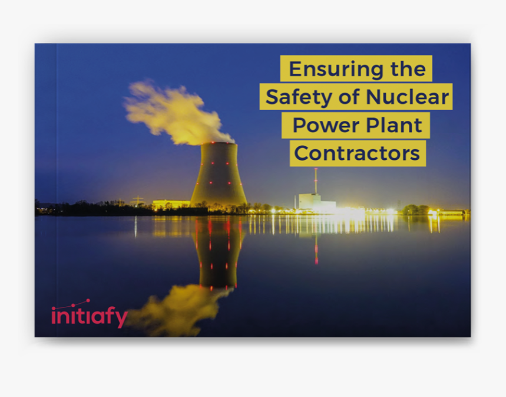
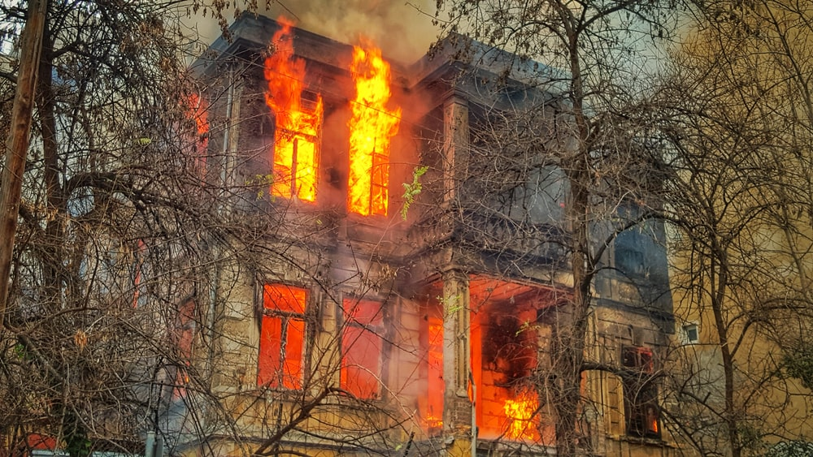

Covid-19 A Global pandemic that caused millions of deaths and economic loss

Covid-19 Preparedness
Safety measures take to prepare further spreading
Regularly and thoroughly clean your hands with an alcohol-based hand rub or wash them with soap and water. This eliminates germs including viruses that may be on your hands.
Maintain a safe distance from anyone who is coughing or sneezing.
Wear a mask when physical distancing is not possible.
Avoid touching your eyes, nose and mouth. Hands touch many surfaces and can pick up viruses. Once contaminated, hands can transfer the virus to your eyes, nose or mouth. From there, the virus can enter your body and infect you.
Cover your mouth and nose with your bent elbow or tissue when you cough or sneeze. Then dispose of the used tissue immediately into a closed bin and wash your hands. By following good ‘respiratory hygiene’, you protect the people around you from viruses, which cause colds, flu and COVID-19.
Clean and disinfect surfaces frequently especially those which are regularly touched, such asdoor handles, faucets and phone screens.
What to do if you feel unwell
Know the full range of symptoms of COVID-19. The most common symptoms of COVID-19 are fever, dry cough, and tiredness. Other symptoms that are less common and may affect some patients include loss of taste or smell, aches and pains, headache, sore throat, nasal congestion, red eyes, diarrhoea, or a skin rash.
Stay home and self-isolate even if you have minor symptoms such as cough, headache, mild fever, until you recover. Call your health care provider or hotline for advice. Have someone bring you supplies. If you need to leave your house or have someone near you, wear a medical mask to avoid infecting others.
If you have a fever, cough and difficulty breathing, seek medical attention immediately. Call by telephone first, if you can and follow the directions of your local health authority.
Keep up to date on the latest information from trusted sources, such as WHO or your local and national health authorities. Local and national authorities and public health units are best placed to advise on what people in your area should be doing to protect themselves.
Terrorism - The unlawful use of violence and intimidation, especially against civilians, in the pursuit of certain aims.
Prepare against Terrorist Activities
Preparing for Terrorism
Wherever you are, be aware of your surroundings. The very nature of terrorism suggests there may be little or no warning.
Take precautions when traveling. Be aware of conspicuous or unusual behavior. Do not accept packages from strangers. Do not leave luggage unattended. Unusual behavior, suspicious packages, and strange devices should be promptly reported to the police or security personnel.
Do not be afraid to move or leave if you feel uncomfortable or if something does not seem right.
Learn where emergency exits are located in buildings you frequent.
If you smell gas, get out of the house and move as far away as possible.
Before you leave any building check to make sure that there is no debris from the building that could fall on you.
Dealing with terrorism
Refrain from going near suspicious parcels
Inform the local police or near by concerned authorities.
Watch your surroundings and keep listening to local tv if some terrorist activity is there in your surroundings.
Stay home in your home if there is a terrorist activity or you hear gunshots outside
During an explosion get outside from the building, refrain from using lifts and elevators.
Move away from sidewalks or streets to be used by emergency officials or others still exiting the building.
Cooperate with local authorities in dealing with terrorism
Nuclear Disaster- It is an event in which high amount of radiation is released into the atmosphere which has a adverse effect on all organisms.
Prepare For Nuclear disaster

Prevention of Nuclear disaster
Waste containing radioactive substances should be disposed poperly.
Nuclear reactors should be cooled properly to avoid nuclear disaster
In case of emergency ,there should be way to shut down all nuclear reactor.
Nuclear operators monitor environmental radiation around their facility and radioactivity in environmental samples in order to confirm that there is no harmful effect on the surrounding environment.
Special facilities should be set up for preventing specific accidents.
Dealing with Nuclear Disaster
Take shelter in a hard-wall building. If you are in a vehicle, get to shelter (building, residence, etc.) as quickly as possible.
Close doors and windows and cut off ventilation.
Get ready for possible evacuation and, if required, follow instructions for evacuating areas in question.
Keep your emergency kit including all essential belongings with you.
If it rains, put anything that may have got wet (umbrella, shoes, coat, mackintosh, etc.) outside.
Don’t touch any objects outside.
Avoid using the phone so as to leave telephone networks available for use by the emergency services.
Fire in Buildings
Prepare For Fire in buildings
Prevention of Fire in Building
Provide adequate means of escape.
Outline clear pathways to exit doors
Install smoke detection systems
Maintain smoke suppression systems
Conduct regular fire drills
Dealing with Nuclear Disaster
In case a fire breaks out, call 101 immediately. The sooner you call, the shorter will be the response time.
If there is no smoke, walk quickly to the nearest exit. If there is light smoke, you will have to crawl to the nearest exit. Never go to the roof; always try your best to go down and out of the building.
Don’t ever go for the elevator. It could malfunction because of the fire, leaving you stuck with no way to escape.
Keep your emergency kit including all essential belongings with you.